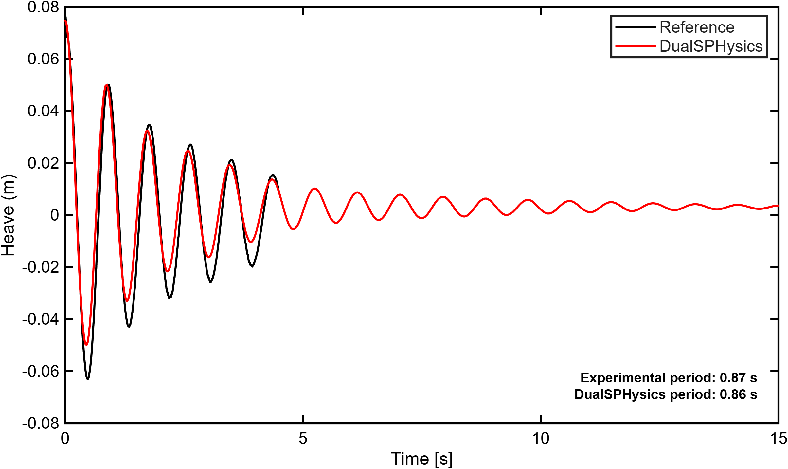

Heave Decay¶
Under review by Bonaventura Tagliafierro
This example considers the free vertical response of an axisymmetric floating body released after an initial upward displacement. It follows SPHERIC Test Case 14, with Float 1 and a nominal +76 mm initial offset selected by the current geometry. The body oscillates under gravity and fluid loading as its motion decays; it is not driven by a periodic wavemaker or an imposed vertical velocity.
The case is supplied at DualSPHysics_v6.0/examples/benchmarks/08_HeaveDecay. The intended comparison is Float 1 vertical displacement against the corresponding experimental history. Final verification of the numerical motion output, compatible time/displacement references and the comparison remains pending. The alternative negative-displacement reference is available but is not the numerical condition configured here.
What's Covered in This Tutorial
- Three-dimensional tank and primitive-based floating-body particles
- STL surface geometry for boundary normals, distinct from particle generation
- A displaced floating body with translation restricted to heave
- Free-slip mDBC, laminar viscosity and the selected diffusion/shifting settings
- Floating-body motion extraction and experimental displacement references
- A comparison workflow that distinguishes equilibrium displacement from absolute position
Video pending – Heave Decay benchmark simulation.
All XML blocks below are labelled excerpts copied from HeaveDecay_Def.xml. They preserve original elements, attributes, expressions, comments and nesting; separate extracts do not form a complete runnable case.
Case Configuration¶
Physical Setup and Selected Condition¶
The model is a three-dimensional tank, with X/Y horizontal and Z upwards. The initial still-water surface is Z=0 and the floor is at -depth. The floating body is centred on X=Y=0. Its particle geometry combines a rounded lower end with an upper cylindrical portion; only Z translation is permitted by the explicit body constraints.
| Quantity | Source configuration |
|---|---|
| Float | Float 1, nominal radius 0.150 m |
| Upper cylindrical height | 0.1370 m in the active primitive draw |
| Nominal total body height | 0.150 + 0.1370 = 0.2870 m |
| Body mass | 9.75 kg |
| Initial bottom elevation | -0.150-0.037+0.07600 = −0.111 m |
| Nominal equilibrium bottom used by the offset expression | −0.150−0.037 = −0.187 m |
| Nominal upward displacement | +0.076 m = +76 mm |
| Particle spacing | radius/15 = 0.010 m |
| Water depth | roundpos(3*height,0,Dp), 0.99 m for height=0.33 |
| Tank internal horizontal extent | X/Y = ±TankHalf, with TankHalf=1.20 m |
| Simulation duration / regular output interval | 5.4 s / 0.0225 s |
The imposed offset is part of the initial geometry placement, not an active motion history. The nominal equilibrium reference in the expression does not establish the exact equilibrium of the discretised numerical body. Its generated centre of mass and the reference needed for the eventual displacement comparison must be checked separately.
Source Files¶
| File | Role |
|---|---|
HeaveDecay_Def.xml |
Geometry, floating-body constraints, damping and numerical parameters |
wHeaveDecay_win64_GPU.bat |
Current Windows GPU generation, simulation and extraction sequence |
float_1.stl |
Active floating-surface input for the geometry-normal export |
reference/Fl1+0p76.txt |
Selected positive-offset experimental displacement history |
reference/Fl1-0p074.txt |
Alternative negative-offset Float 1 history |
reference/SPHERIC_TestCase14_Free_heave.pdf |
Experimental geometry, units, datum and condition descriptions |
The folder also contains a Windows shortcut and numerical output under HeaveDecay_out/. The current BAT extracts body motion using FloatingInfo; no MeasureTool elevation stage is active.
Geometry Definition¶
Dimensions, Grid and Initial Placement¶
<predefinition>
<!-- User-defined variables -->
<newvarcte base="0.80" _rem="Water level" />
<newvarcte height="0.33" _rem="Water level" />
<newvarcte density="500" _rem="Water level" />
<newvarcte radius="0.150" _rem="radius"/>
<newvarcte Dp="radius/15" />
<newvarcte Dpm="Dp/2" />
<newvarcte depth="roundpos(3*height,0,Dp)" _rem="Water level (whole number of Dp)" />
<newvarcte expectedPeriod="0.90" _rem="Wave parameters: Period and Wave height" />
<newvarcte timeMax="6*expectedPeriod" />
<newvarcte domainDown="-3.0*base" />
<newvarcte domainUp="3.0*base" />
<newvarcte scale="1" />
<newvarcte timeOut="expectedPeriod/40"/>
<newvarcte initialDraft="-0.150-0.037+0.07600"/>
<!-- Tank (whole numbers of Dp): real surfaces at the walls, the floor (-depth) and SWL (z=0) -->
<newvarcte TankHalf="roundpos(abs(domainDown)/2,0,Dp)" _rem="Half width of the tank" />
<newvarcte TopZ="roundpos(0.40,0,Dp)" _rem="Top of the walls" />
<!-- Particle grid: nodes at Dp/2 from the real surfaces -->
<newvarcte PminXY="-TankHalf-Dpm-10*Dp" PminZ="-depth-Dpm-10*Dp" />
</predefinition>
base=0.80 and the domain variables size the tank rather than the body. height=0.33 sets the depth expression; the active body height is 0.287 m. density=500 does not override the explicit body mass. expectedPeriod=0.90 is a sizing/timing input, not a measured natural period: it sets timeMax=6*expectedPeriod=5.4 s and timeOut=expectedPeriod/40=0.0225 s.
The real walls are at X/Y=±1.20 m, giving a 2.40 m square tank, with floor −0.99 m and grid-rounded wall top TopZ=0.40 m. The particle-grid reference lies half a spacing plus ten spacings beyond these horizontal boundaries, at PminXY=−1.305 m. It is a bounding-grid origin, not an inner tank wall:
<definition dp="#Dp">
<pointref x="#PminXY" y="#PminXY" z="#PminZ" comment="Origin of the particle grid: same as pointmin" />
<pointmin x="#PminXY" y="#PminXY" z="#PminZ" />
<pointmax x="#-PminXY" y="#-PminXY" z="#TopZ+10*Dp" />
</definition>
Nonzero extents in X, Y and Z establish the 3-D case. No periodic-boundary parameters are configured. Real surfaces, grid bounds and boundary/fluid particle centres must not be treated as identical positions. Generated particle counts and final discretised bounds are not asserted without GenCase output.
Surface Geometry for Normals¶
This complete named list draws surfaces with particle drawing disabled:
<list name="GeometryForNormals">
<setactive drawpoints="0" drawshapes="1"/>
<!-- Tank -->
<setmkbound mk="0" />
<setfrdrawmode auto="false" />
<setnormalinvert invert="true" />
<drawbox>
<boxfill>all^top</boxfill>
<point x="#-TankHalf" y="#-TankHalf" z="#-depth" />
<endpoint x="#TankHalf" y="#TankHalf" z="#TopZ" />
</drawbox>
<setnormalinvert invert="false" />
<setfrdrawmode auto="false" />
<!-- floater -->
<setmkbound mk="50" />
<drawfilestl file="float_1.stl" >
<drawscale x="#scale" y="#scale" z="#scale" />
<drawrotate angx="0" angy="0" angz="0" />
<drawmove x="#0" y="0" z="#initialDraft" />
<depth depthmin="#0*Dp" />
</drawfilestl>
<shapeout file="hdp" />
<resetdraw />
</list>
The fixed tank uses mkbound=0, with inward-facing normals selected for its closed-bottom/sidewall surface. The floating surface uses mkbound=50 and imports float_1.stl at unit scale, zero rotation and translation Z=#initialDraft. Its untransformed mesh spans approximately X/Y=±0.150 m and Z=0…0.287 m; the translation therefore gives a nominal body bottom −0.111 m and top 0.176 m. This is a static inspection of the supplied mesh and placement, not a generated particle cloud.
The list exports hdp geometry and resets drawing. The main list calls GeometryForNormals before switching to particle generation. The normal-data configuration consumes the resulting actual-geometry file:
<normals>
<distanceh value="2.0" comment="Maximum distance (H*distanceh) to compute normals data (default=2)" />
<geometryfile file="[CaseName]_hdp_Actual.vtk" comment="File with boundary geometry (VTK format). Use NONE to ignore it." />
</normals>
[CaseName]_hdp_Actual.vtk is an expected geometry-generation product. distanceh=2.0 sets the normal-data search distance relative to H. The STL is not a Chrono collision mesh, and no Chrono coupling is configured.
Tank and Water Particles¶
The active main list changes to drawpoints=1, drawshapes=0 and actual | dp | bound. Tank particles are drawn on the bottom and four sidewalls using the original layer specification:
<drawbox>
<boxfill>bottom | left | right | front | back</boxfill>
<point x="#-TankHalf-Dpm" y="#-TankHalf-Dpm" z="#-depth-Dpm" />
<endpoint x="#TankHalf+Dpm" y="#TankHalf+Dpm" z="#TopZ-Dpm" />
<layers vdp="0*,1,2,3,4" />
</drawbox>
The half-spacing offsets distinguish the first boundary-particle positions from the wall surfaces. The active fluid fill follows, before the floating particles are drawn:
<fillbox x="#Dpm+40*Dp" y="#Dpm" z="#-depth+Dpm+5*Dp">
<modefill>void</modefill>
<point x="#-TankHalf" y="#-TankHalf" z="#-depth" />
<size x="#2*TankHalf" y="#2*TankHalf" z="#depth" />
</fillbox>
This fills the interior from the floor to still water. The seed is inside the fluid region; the body interior is subsequently cleared by explicit void draws. The source contains an alternative direct STL particle import inside an XML comment, but it is not the active particle-generation route.
Floating-body Particles and Fluid Exclusion¶
The following contiguous source segment begins at the void selection and ends with the active cylindrical shell:
<setmkvoid />
<drawsphere radius="#radius">
<point x="0" y="0" z="#initialDraft+0.150" />
</drawsphere>
<drawcylinder radius="#radius">
<point x="0" y="0" z="#initialDraft+0.150" />
<point x="0" y="0" z="#initialDraft+0.150+0.1370" />
</drawcylinder>
<setmkbound mk="50" />
<setfrdrawmode auto="true" />
<drawsphere radius="#radius">
<point x="0" y="0" z="#initialDraft+0.150" />
<layers vdp="-0.5,-1.5,-2.5,-3.5" />
</drawsphere>
<setmkvoid /> <!-- to remove half sphere -->
<drawcylinder radius="#radius" mask="0">
<point x="0" y="0" z="#initialDraft+0.150" />
<point x="0" y="0" z="#initialDraft+1.00" />
</drawcylinder>
<setmkbound mk="50" />
<drawcylinder radius="#radius" mask="1">
<point x="0" y="0" z="#initialDraft+0.150" />
<point x="0" y="0" z="#initialDraft+0.150+0.1370" />
<layers vdp="-0.5,-1.5,-2.5,-3.5" />
</drawcylinder>
Void sphere/cylinder draws remove fluid from the hull volume. The body sphere is centred at initialDraft+0.150, and the upper half is removed by the intervening void cylinder. The final cylinder extends from that join to initialDraft+0.150+0.1370. The inward layer values -0.5,-1.5,-2.5,-3.5 are retained literally. Together these active primitive operations define the hemispherical lower end and cylindrical upper part. They must not be described as an STL-derived particle import.
Floating-body Properties and Release¶
<floatings>
<floating mkbound="50">
<massbody value="9.75" />
<!-- <center x="0" y="0" z="0.090" /> -->
<translationDOF x="0" y="0" z="1" comment="Use 0 to restrict Degrees Of Freedon for translation (default=(1,1,1))" />
<rotationDOF x="0" y="0" z="0" comment="Use 0 to restrict Degrees Of Freedon for rotation (default=(1,1,1))" />
</floating>
</floatings>
One body is selected by local mkbound=50; massbody=9.75 kg matches Float 1. Translation is restricted explicitly to (0,0,1), while rotation is restricted to (0,0,0): the numerical body has heave only, with X/Y translations and all rotations locked. These are configured constraints, not an inference from the chosen validation observable.
The centre line is an XML comment and is not an active prescribed centre. No active centre, inertia tensor or body-density value is supplied in this floating definition. They must not be replaced by the experimental centre-of-gravity height or a simplified analytical inertia formula. Generated body metadata are needed to identify the numerical centre and inertia used by the solver. Rotations remain locked regardless of that metadata.
No initial translational or angular velocity, imposed motion or external forcing history is specified. The optional velocity readers use zero when such entries are absent. FtPause=0.0 requests no initial floating freeze: the normal simulation starts from the displaced configuration, without a separate delayed-release command. The current RigidAlgorithm=FREE uses the internal collision-free floating-body treatment, not Chrono or a mooring solver. Fluid forces, buoyancy and weight govern the permitted vertical response.
Free-decay Interpretation¶
Raising the body relative to its still-water reference changes immersion and the vertical force balance. The subsequent free response can generate waves and lose oscillation amplitude through the modelled fluid–body dynamics and numerical dissipation. It is not forced periodic heave. A physical damping ratio, natural period, radiation/drag decomposition or decay coefficient cannot be inferred from the viscosity choice or the sizing variable expectedPeriod; no fitting or result analysis is performed here.
The reference experiment releases a body without an external constraint, whereas this XML explicitly restricts motion to heave. The present comparison target is the vertical history; it does not validate unrestricted six-degree-of-freedom behaviour.
Passive Damping and Simulation Domain¶
<damping>
<!-- Damping definition accoding to a box domain -->
<dampingbox active="true">
<directions value="all,-top" comment="Active directions (top/bottom/left/right/front/back) (default=all)" />
<limitmin comment="Limit where minimum reduction is applied">
<pointini x="#-domainUp/3" y="#-domainUp/3" z="-0.60" />
<pointend x="#domainUp/3" y="#domainUp/3" z="0.5" />
</limitmin>
<limitmax comment="Limit where maximum reduction is applied">
<pointini x="#-domainUp/2" y="#-domainUp/2" z="#-depth" />
<pointend x="#domainUp/2" y="#domainUp/2" z="0.5" />
</limitmax>
<overlimit value="0.1" comment="The scope of maximum reduction over limitmax (default=0)" />
<redumax value="10" comment="Maximum reduction in location limitmax (default=10)" />
<factorxyz x="1" y="1" z="1" comment="Application factor in components (default x=1,y=1,z=1)" />
</dampingbox>
</damping>
The damping box is active in all specified directions except the top. Its inner limits are X/Y=±domainUp/3=±0.80 m, Z=−0.60…0.50 m. Maximum-reduction limits are X/Y=±domainUp/2=±1.20 m and Z=−depth…0.50 m. overlimit=0.1, redumax=10 and component factors (1,1,1) retain the source selections. This outer/bottom numerical absorption is distinct from a measured experimental body-damping coefficient.
<simulationdomain comment="Defines domain of simulation (default=Uses minimum and maximum position of the generated particles)">
<posmin x="default" y="default" z="default" comment="e.g.: x=0.5, y=default-1, z=default-10%" />
<posmax x="default" y="default" z="default + 50%" />
</simulationdomain>
The solver retains generated minimum/maximum bounds and extends the upper Z domain by the source's default + 50% expression. The commented outputparts block is not an active output filter and its expressions are not used to describe the current output selection.
Numerical Parameters¶
Constants and Boundary Treatment¶
<constantsdef>
<gravity x="0" y="0" z="-9.81" comment="Gravitational acceleration" units_comment="m/s^2" />
<rhop0 value="998.5" comment="Reference density of the fluid" units_comment="kg/m^3" />
<rhopgradient value="3" comment="Initial density gradient 1:Rhop0, 2:Water column, 3:Max. water height (default=2)" />
<hswl value="0" auto="true" comment="Maximum still water level to calculate speedofsound using coefsound" units_comment="metres (m)" />
<gamma value="7" comment="Polytropic constant for water used in the state equation" />
<speedsystem value="0" auto="true" comment="Maximum system speed (by default the dam-break propagation is used)" />
<coefsound value="30" comment="Coefficient to multiply speedsystem" />
<speedsound value="0" auto="true" comment="Speed of sound to use in the simulation (by default speedofsound=coefsound*speedsystem)" />
<coefh value="1.5" comment="Coefficient to calculate the smoothing length (h=coefh*sqrt(3*dp^2) in 3D)" />
<cflnumber value="0.2" comment="Coefficient to multiply dt" />
</constantsdef>
Gravity is (0,0,−9.81) m/s², reference fluid density is 998.5 kg/m³ and density-gradient option 3 is selected. coefh=1.5, CFL coefficient 0.2 and automatic sound-speed calculation with coefsound=30 are preserved. The sound-speed fields with zero values and auto=true request automatic calculation; they do not prescribe a zero sound speed.
This first continuous parameter extract selects boundaries, time integration and fluid treatment:
<parameter key="Boundary" value="mDBC" comment="Boundary method: DBC, mDBC, MIX:MixBC (default=DBC)" />
<parameter key="SlipMode" value="FS" comment="Slip mode for mDBC: NS:No-slip, FS:Free slip, V0:TanVel=0, M22:mDBC 2022 (default=NS)" />
<parameter key="NoPenetration" value="N" comment="Activate No-Penetration option for mDBC: Y/N (default=N)" />
<parameter key="StepAlgorithm" value="SYM" comment="Step Algorithm: SYM:Symplectic, VER:Verlet (default=SYM)" />
<parameter key="VerletSteps" value="40" comment="Verlet only: Number of steps to apply Euler timestepping (default=40)" />
<parameter key="Kernel" value="WC2" comment="Interaction Kernel: WC2:WendlandC2, WC6:WendlandC6 (default=WC2)" />
<parameter key="ViscoTreatment" value="LAM" comment="Viscosity formulation: LAM:Laminar, ART:Artificial (default=LAM)" />
<parameter key="Visco" value="1e-06" comment="Viscosity value. Typically 0.01 for Artificial and 1e-6 m^2/s (water kinematic viscosity) for Laminar" />
<parameter key="ViscoBoundFactor" value="1" comment="Multiply viscosity value with boundary (default=1)" />
<parameter key="Turbulence" value="SPS" comment="Turbulence model: NO:None, SPS:Sub-particle scale (default=NO)" />
<parameter key="DensityDT" value="FO" comment="Density Diffusion Term: NO:None, FO:Fourtakas (default=NO)" />
<parameter key="DensityDTvalue" value="0.10" comment="DDT value (default=0.1)" />
<parameter key="DivCleanKp" value="30" comment="Kappa parameter for Divergence Cleaning (equal to coefsound) (default=0)" />
The selected boundary method is mDBC with SlipMode=FS (free slip). The current reader maps it to BSLIP_FreeSlip, distinct from no-slip NS and zero-tangential-velocity V0. NoPenetration=N does not enable the additional no-penetration option. Geometry-based normal data include both tank and floating surface; no per-body boundary-method override is present.
Integration is symplectic (SYM) with Wendland C2 (WC2). ViscoTreatment=LAM, Visco=1e-06 m²/s and boundary multiplier 1 are selected, together with Turbulence=SPS. These active settings do not by themselves establish the provenance of a plotted numerical curve.
DensityDT=FO selects Fourtakas diffusion with coefficient 0.10; see Fourtakas et al. (2019). DivCleanKp=30 is explicitly prescribed for divergence cleaning, matching the configured sound-speed coefficient; it is not an experimental damping coefficient.
Shifting and Body Algorithm¶
<parameter key="Shifting" value="4" comment="Shifting mode 0:None, 1:Ignore bound, 2:Ignore fixed, 3:Full, 4:Full advanced (default=0)" />
<parameter key="ShiftCoef" value="-0.2" comment="Coefficient for standard shifting computation (default=-2)" />
<parameter key="ShiftTFS" value="2.75" comment="Threshold to detect free surface. Typically 1.5 for 2D and 2.75 for 3D (default=0)" />
<parameter key="ShiftAdvCoef" value="-0.01" comment="Coefficient for advanced shifting computation (default=-0.01)" />
<parameter key="ShiftAdvALE" value="N" comment="ALE formulation for advanced shifting: Y/N (default=N)" />
<parameter key="ShiftAdvNCPress" value="Y" comment="Non conservative pressure formulation for advanced shifting: Y/N (default=N)" />
<parameter key="RigidAlgorithm" value="FREE" comment="Rigid Algorithm: FREE:collision-free, SPH, DEM, CHR:Chrono collision (default=SPH)" />
<parameter key="FtPause" value="0.0" comment="Time to freeze the floatings at simulation start (warmup) (default=0)" units_comment="seconds" />
<parameter key="FtIgnoreRadius" value="Y" comment="Ignores floating body radius with periodic conditions: Y/N (default=N)" />
Full advanced shifting, mode 4, is active with ShiftAdvCoef=-0.01, ShiftAdvALE=N and ShiftAdvNCPress=Y. The standard-mode ShiftCoef=-0.2 and ShiftTFS=2.75 do not control the selected advanced branch. RigidAlgorithm=FREE retains collision-free body motion; FtIgnoreRadius=Y does not enable periodic boundaries.
Time Control and Output¶
<parameter key="CoefDtMin" value="0.001" comment="Coefficient to calculate minimum time step dtmin=coefdtmin*h/speedsound (default=0.05)" />
<parameter key="DtIni" value="#2*Dp/1500" comment="Initial time step. Use 0 to default use (default=h/speedsound)" units_comment="seconds" />
<parameter key="DtMin" value="0.00001" comment="Minimum time step. Use 0 to default use (default=coefdtmin*h/speedsound)" units_comment="seconds" />
<parameter key="DtFixed" value="0" comment="Fixed Dt value. Use 0 to disable (default=disabled)" units_comment="seconds" />
<parameter key="DtFixedFile" value="NONE" comment="Dt values are loaded from file. Use NONE to disable (default=disabled)" units_comment="milliseconds (ms)" />
<parameter key="DtAllParticles" value="N" comment="Velocity of all the particles is used to calculate DT. Y:All, N:Only fluid/floating (default=N)" />
<parameter key="TimeMax" value="#timeMax" comment="Time of simulation" units_comment="seconds" />
<parameter key="TimeOut" value="#timeOut" comment="Time out data" units_comment="seconds" />
<parameter key="TimeOutExtra" value="0.05" />
<parameter key="RhopOutMin" value="700" comment="Minimum density valid (default=700)" units_comment="kg/m^3" />
<parameter key="RhopOutMax" value="1300" comment="Maximum density valid (default=1300)" units_comment="kg/m^3" />
<parameter key="WrnPartsOut" value="Y" comment="Active warning according to number of out particles: Y/N (default=Y)" />
<parameter key="MinFluidStop" value="0" comment="Minimum proportion of initial fluid particles to continue the simulation 0:Never stops, 0.1:Stops when fluid drops to 10%. (default=0)" />
The normal BAT starts a new simulation rather than a restart. Current duration is 5.4 s and regular output interval is 0.0225 s, approximately 44.444 Hz; this differs from the experimental 200 Hz sampling. TimeOutExtra=0.05 is separate, and actual saved timestamps follow solver stepping.
The initial step is the source expression #2*Dp/1500 (approximately 0.0000133333 s for Dp=0.010 m). DtMin=0.00001 s is explicit, so it must not be replaced by the derived CoefDtMin default formula. Fixed stepping is disabled with DtFixed=0 and DtFixedFile=NONE; DtAllParticles=N uses the fluid/floating velocity criterion.
SavePosDouble=Y requests double-precision positions. SaveExtraParts=10 is an extra-data PART-interval selection, not a 10 s output period. Valid density limits are 700–1300 kg/m³; particle-out warnings are enabled and MinFluidStop=0 disables the fluid-proportion stopping criterion. No leading-underscore element is present in the current XML; active zero-valued settings and XML comments are treated separately.
Experimental Reference Data¶
Float 1 and Displacement Datum¶
The supplied Test 14 PDF identifies Float 1 by its 9.75 kg mass and round-base geometry. Its experimental vertical zero is the position of the stationary body floating in still water. The displacement histories therefore describe motion relative to equilibrium, not an absolute numerical centre Z coordinate. Experimental time is in seconds and displacement is in millimetres, sampled at 200 Hz.
Both supplied text files are headerless, whitespace/tab-separated two-column records. Their actual contents are:
| Local file | Condition | Columns | Records | Time span / increment | First recorded displacement |
|---|---|---|---|---|---|
reference/Fl1+0p76.txt |
Float 1, nominal +76 mm release | Time (s), displacement (mm) | 901 | 0…4.5 s / 0.005 s | 76.4378 mm |
reference/Fl1-0p074.txt |
Float 1, nominal −74 mm release | Time (s), displacement (mm) | 901 | 0…4.5 s / 0.005 s | −73.9973 mm |
Units and Float 1 condition descriptions come from the benchmark PDF, not from guessing the numeric magnitude or filename. The local positive filename omits a zero compared with the PDF's Fl1+0p076.txt; its first value and the XML's +0.076 m offset support selecting this positive-displacement series. The SPHERIC webpage has a further naming discrepancy for that condition, so the local PDF, physical body/offset and actual data are used together rather than relying on the web filename alone.
The first positive value is 76.4378 mm, not exactly 76 mm; it is preserved without forcing an offset. The negative file is an alternative release condition, not another simulation represented by the current XML. Float 2 and its different mass/offset are not selected here.
Comparison with Numerical Motion¶
The intended numerical observable is the vertical body displacement relative to a verified equilibrium reference. FloatingInfo's center is an absolute centre-of-mass position in metres, while its heave is a centre displacement in Z; the output's displacement zero must be checked rather than assumed to be the experimental equilibrium zero.
For a verified centre reference, an equilibrium-based comparison could use 1000*(center.z(t)-center.z_equilibrium) in millimetres. This states the required datum/unit relationship, not a transformation performed here: the reference centre is not established by the inactive centre comment or by the nominal geometry offset alone. Likewise, a heave channel referenced to the initial numerical position is not automatically the experimental equilibrium displacement.
Both experimental files start at t=0, but that does not prove identical numerical/experimental release-time conventions. Confirm the actual motion record, marker, time origin and overlapping interval before plotting. No time shift, initial-value subtraction, interpolation, unit-converted dataset or comparison metric is generated in this task.
Running the Simulation¶
Current Windows GPU Script¶
The available BAT defines these case names and executable paths. Defined utilities are not all active calls:
set name=HeaveDecay
set dirout=%name%_out
set diroutdata=%dirout%\data
rem Defines executable paths.
set dirbin=../../../bin/windows
set gencase="%dirbin%/GenCase_win64.exe"
set dualsphysicscpu="%dirbin%/DualSPHysics6.0CPU_win64.exe"
set dualsphysicsgpu="%dirbin%/DualSPHysics6.0_win64.exe"
set boundaryvtk="%dirbin%/BoundaryVTK_win64.exe"
set partvtk="%dirbin%/PartVTK_win64.exe"
set partvtkout="%dirbin%/PartVTKOut_win64.exe"
set measuretool="%dirbin%/MeasureTool_win64.exe"
set computeforces="%dirbin%/ComputeForces_win64.exe"
set isosurface="%dirbin%/IsoSurface_win64.exe"
set flowtool="%dirbin%/FlowTool_win64.exe"
set floatinginfo="%dirbin%/FloatingInfo_win64.exe"
set tracerparts="%dirbin%/TracerParts_win64.exe"
Run from the case directory so the XML, STL and relative executable paths are resolved as intended. If output exists, the supplied script offers delete/re-run, post-processing or abort. Its run branch removes the existing output directory; no branch has been executed for this walkthrough.
GenCase and GPU Solver¶
rem Executes GenCase to create initial files for simulation.
%gencase% %name%_Def %dirout%/%name% -save:all
if not "%ERRORLEVEL%" == "0" goto fail
rem Executes DualSPHysics to run the SPH simulation.
%dualsphysicsgpu% -gpu %dirout%/%name% %dirout%
if not "%ERRORLEVEL%" == "0" goto fail
GenCase prepares the particle/body data and exported actual geometry, then the GPU solver advances the selected free-decay configuration. The STL is required by the active normal-geometry list, despite primitive particle generation. No extra motion file, Chrono model or mooring input is configured.
Particle, Boundary and Body-motion Extraction¶
The following active commands occur after the solver, in the original order:
:postprocessing
rem Executes PartVTK to create VTK files with fluid particles.
set dirout2=%dirout%\particles
%partvtk% -dirdata %diroutdata% -savevtk %dirout2%/PartFluid -onlytype:-all,+fluid -continue:1
if not "%ERRORLEVEL%" == "0" goto fail
rem Executes PartVTKOut to create VTK files with excluded particles.
%partvtkout% -dirdata %diroutdata% -savevtk %dirout2%/PartFluidOut -SaveResume %dirout2%/_ResumeFluidOut
if not "%ERRORLEVEL%" == "0" goto fail
rem Executes BoundaryVTK to create VTK files with floating-body geometry.
set dirout2=%dirout%\boundary
%boundaryvtk% -loadvtk AutoActual -motiondata %diroutdata% -savevtkdata %dirout2%/Box -onlytype:floating
if not "%ERRORLEVEL%" == "0" goto fail
rem Executes FloatingInfo to export the selected floating-body data to CSV files.
set dirout2=%dirout%\floatinginfo
%floatinginfo% -dirdata %diroutdata% -onlymk:60 -savedata %dirout2%/FloatMotion
if not "%ERRORLEVEL%" == "0" goto fail
PartVTK selects fluid particles with -onlytype:-all,+fluid and writes the particles/PartFluid prefix. BoundaryVTK uses recorded motion and actual geometry for the floating-boundary boundary/Box prefix; the generic name “Box” does not change the rounded body's shape.
FloatingInfo selects MK 60 and writes floatinginfo/FloatMotion. Check the generated marker metadata against local mkbound=50. Centre position and heave displacement use metres; linear velocity uses m/s, angular velocity rad/s and rotations degrees. Body-motion files are available, but quantities and reference datums still require final verification.
The current BAT uses -dirdata for FloatingInfo. All active utility calls have error checks; static inspection does not prove runtime completion.
Expected Outputs and Final Release Platforms¶
Relative location under HeaveDecay_out/ |
Expected role |
|---|---|
data/ |
Saved solver particle/body data for extraction |
particles/PartFluid… |
Fluid-particle VTK series |
boundary/Box… |
Floating-body geometry reconstructed from motion |
floatinginfo/FloatMotion |
FloatingInfo motion-output prefix |
These paths follow the current BAT. Available generated XML agrees with the inspected 0.010 m spacing, SPS, advanced shifting, divergence cleaning 30 and 5.4 s requested duration. The supplied PNG spans 15 s, so it is not verified as the result of that exact current configuration. CPU/Linux release coverage remains a separate packaging review.
Results and Validation¶
Figure 1 – Float 1 Heave Decay¶

Preliminary figure. The numerical results and their comparison with the reference data are pending final verification.
Original axis label and preliminary results
The earlier supplied SPS/NO turb image uses Heave [N], which is dimensionally inconsistent with displacement; its original asset is retained unchanged. The updated figure displayed here labels heave in metres. Neither the previous curves nor the updated PNG have been verified as results of the exact current XML configuration. The current definition selects SPS, while the updated plot alone does not identify its turbulence or shifting settings.
The final comparison requires verified body-motion output, the positive-offset Float 1 experimental channel, compatible units, an equilibrium displacement reference and justified time origins. No experimental agreement, natural period, damping ratio, convergence or completed physical validation is claimed. No second comparison is added for the negative release because the current numerical geometry does not configure that condition.
References¶
◆ Stansby, P., & Carpintero Moreno, E. SPHERIC Test Case 14: Free heave response of axisymmetric bodies with a round base. The supplied benchmark PDF and reference data define the selected experimental condition. SPHERIC Test 14
◆ Fourtakas, G., Domínguez, J. M., Vacondio, R., & Rogers, B. D. (2019). Local Uniform Stencil (LUST) boundary condition for arbitrary 3-D boundaries in parallel smoothed particle hydrodynamics (SPH) models. Computers & Fluids, 190, 346–361. https://doi.org/10.1016/j.compfluid.2019.06.009